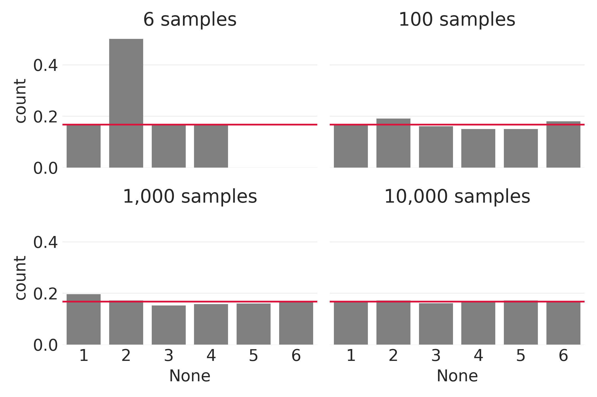
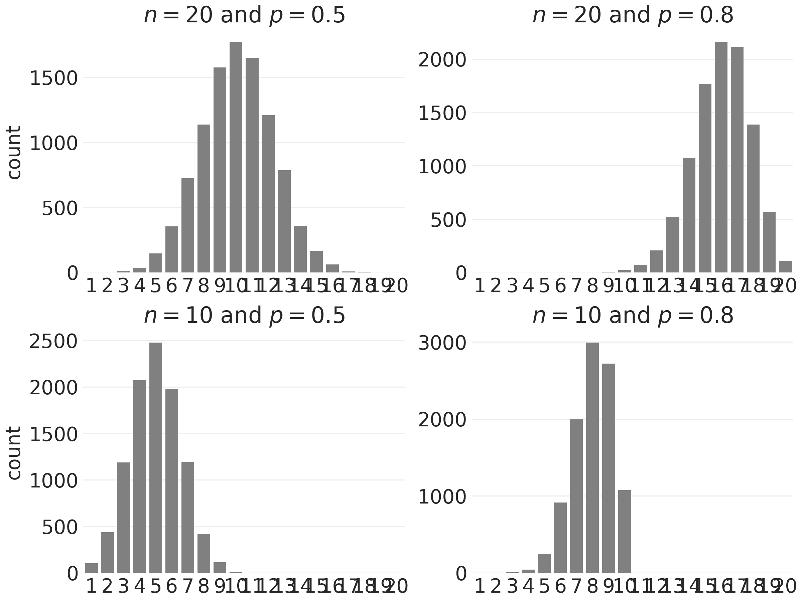
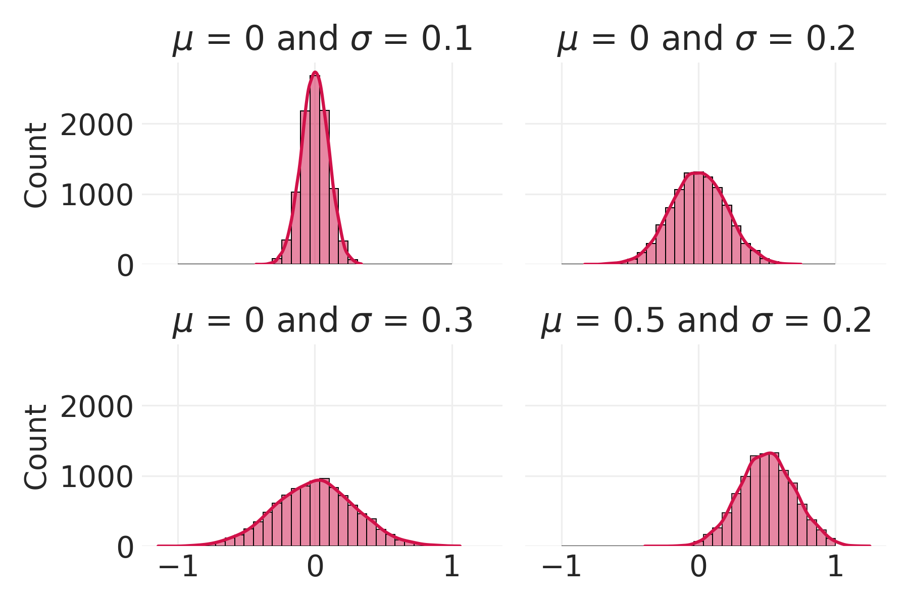
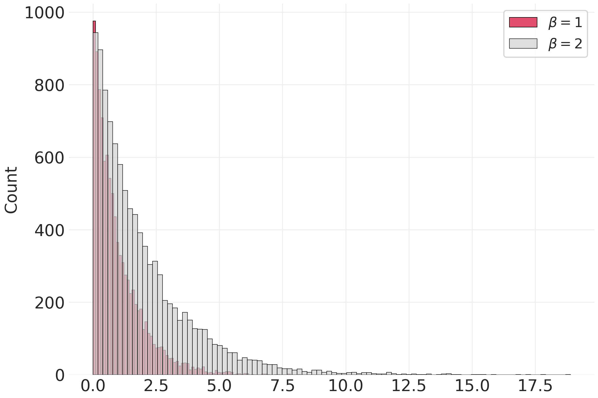

17 Probability 101
::: ## Planned Changes
Full rewrite.
:::
17.1 LEARNING OBJECTIVES
- Explain the meaning of key concepts in probability theory, including
- random variable
- sample space
- Differentiate between (i) discrete probability distributions and Probability Mass Functions (PMFs) and (ii) continuous probability distributions and Probability Density Functions (PDFs)
- Learn how to select probability distributions for modelling by thinking through their assumptions and learning about the parameters they take
- Explain the differences between marginal, joint, and conditional probabilities, and the notation used to express these probabilities
- Understand Bayes’ theorem and its component parts
17.2 LEARNING MATERIALS
You can find the online learning materials for this chapter in doing_computational_social_science/Chapter_26. cd into the directory and launch your Jupyter Server.
17.3 INTRODUCTION
In the previous chapter, we discussed how the Frequentist paradigm differs from the Bayesian interpretation probability and contrasted discriminative models with generative models. Throughout that discussion, we didn’t actually discuss the mathematics of probability, which are the same regardless of your philosophical persuasion, or the role that probabilities play in the models you develop.
This chapter is a primer on probability theory. Unlike other introductions to probability, we won’t be getting into any mathematical proofs; there are plenty of those available elsewhere. Instead, we will clarify some foundational concepts and aim to build a bit of intuition about how different types of probability distributions work through simple simulations. Though not especially broad or deep, this introduction will provide enough knowledge of probability that you will be able to understand, develop, critique, interpret, and revise generative models for structured, network / relational, and text data.
17.3.1 Imports
import math
import numpy as np
np.random.seed(42)
import pandas as pd
from collections import Counter
import seaborn as sns
import matplotlib.pyplot as plt
from dcss import set_style
set_style()17.4 FOUNDATIONAL CONCEPTS IN PROBABILITY THEORY
Frequentists and Bayesians differ in their philosophies but not in their mathematics. Both paradigms are built on a solid mathematical foundation of probability distributions that define the relative probability of all potential events that could result from some pre-defined system, experiment, or trial.
The starting point for probability theory is the sample space, sometimes referred to using the symbol \(S\). The sample space is simply an exhaustive list of all the possible events (or outcomes) that could result from some trial or experiment. The sample space for a coin toss, for example, consists of Heads and Tails, but not 42 or a bag of catnip. Once we have defined the sample space, we assign probabilities to every possible event.
Probability distributions are just sample spaces where every possible event has an associated probability. They are governed by three axioms:
- The probability of any event occurring is equal to or greater than 0. There can be no negative probabilities.
- The probability of the entire sample space is 1. If the probability distribution is discrete (i.e., distinct events that can be individually counted, like the result of a coin flip) then the sum of those probabilities must equal 1. If the probability distribution is continuous (i.e., you can’t count the distinct events because they are uncountably infinite) then the probabilities of each event must add up to 1 using an infinite sum operation.
- If events A and B are mutually exclusive (a coin can’t land both Heads and Tails), or disjoint, then the probability of either event occurring is equal to the probability of A + B.
This third axiom, the “additivity axiom,” is often expressed using notation from set theory. You may see it expressed in one of two forms, one that is common in more mathematical discussions of probability:
\[ \text{if } P(\text{A} \cap \text{B}) = \emptyset, \text{ then } P(\text{A} \cup \text{B}) = P(A) + P(B) \]
and one that is more common in the statistical discussions of probability:
\[ \cap P(A_{i}) = \emptyset, \text{ then } \cup P(A_i) = P(A_1) + P(A_2) + ... + P(A_n) \]
These two expressions are saying the same thing. The \(\cup\) represents the set theoretic concept of the union of two events and the \(\cap\) symbol represents their intersection. Consider the simple venn diagram in Figure Figure 17.1.
Two events, A and B, intersect in the top of the figure. The point at which they intersect is the portion of the venn diagram where the two events overlap one another. This intersection is represented by the symbol \(\cap\). If the two events do not intersect, as in the bottom of the figure, then the intersection (\(\cap\)) of the two sets is empty. We represent this emptiness with the symbol \(\emptyset\). In essence, all the third axiom is saying is that if two events are disjoint, then the probability of either of those two events happening is the probability of the first event plus the probability of the second event. That’s it.
These iron-clad rules are paraphrased versions of the original trio, known as ‘Kolmogorov Axioms’ after the mathematician Andrey Kolmogorov. Together, they produce a number of useful features that we’ll explore and exploit throughout the rest of this book.
Another essential concept in probability theory is that of a “random variable.” Consider the example of a coin flip once again. There is no inherent numerical value for the outcome of a coin flip. When we flip it, it will either land heads up or tails up. The trouble is that neither ‘heads’ nor ‘tails’ has any inherent mathematical meaning, so it’s up to us to create something that allows two worlds (the world of the coin and the world of statistics) to come together.
One way to do this is to say that there is a “random variable” with values 0 and 1 that represent the outcomes of the coin flip; heads up = 1, tails up = 0. At this point, writing \(X = \text{heads}\) means the same thing as \(X = 1\), and writing \(X = \text{tails}\) means the same thing as \(X = 0\). What’s more, we can use probability distributions to describe the probability of the coin flip taking on each value it is capable of producing. Random Variables may take on more than two values; you might use one to describe income, occupation, or height. In short, random variables are what enable us to connect the tangible worlds of coin tosses, income inequality, and so on, with the mathematical world of probability and statistical inference.
Now, let’s start learning about the properties of some specific probability distributions. I’ll be perfectly honest, most of this is not inherently interesting to applied researchers, but a bit of knowledge here goes a very long way. In the chapters that follow, I will assume you know the contents of this chapter in particular, even though you might be flipping back to it from time to time to remind yourself of the details. That’s perfectly fine!
Finally, as with other chapters in this book we’ll be discussing some equations. As promised at the start of the book, these equations are not meant to carry the explanatory weight here. If you are used to seeing and thinking about equations, great. If not, that’s OK too. You still need to understand how the distributions work and what kinds of parameters they take, but it’s possible to gain that knowledge from the simulations instead of the formulas. Ideally, the simulations will help you understand the equations, and the two can work together.
17.5 PROBABILITY DISTRIBUTIONS AND LIKELIHOOD FUNCTIONS
The mathematics of probability vary depending on whether we are working with discrete or continuous distributions, and then there are further differences based on the specific discrete or continuous distributions. To help you understand some of the differences and build some intuition, we’ll walk through a few examples of widely-used distributions. We’ll start with discrete distributions and “probability mass functions,” which represents the probability that a discrete random variable for a probability distribution is a specific value. Then we’ll move on to continuous distributions and “probability density functions.”
17.5.1 Discrete Distributions, Probability Mass Functions
Discrete distributions are used when we have a limited number of distinct countable outcomes. For example, we can flip Heads or Tails on a coin, but nothing in between. Similarly, we can roll a 3 or a 4 on a regular die, but we can’t roll a 3.5. Below, we will learn a bit about three discrete probability distributions that are commonly used in models: the Uniform, Bernoulli, and Binomial distributions.
17.5.1.1 Everything is Equally Likely: The Uniform Distribution
The uniform distribution is probably familiar to you in practice, if not by name. A uniform probability distribution describes a collection of possible outcomes for a random process where each outcome is equally (uniformly) likely. To compute the probability of an event given this assumption that all events are equally likely, we simply divide by the number of possible events,
\[ P(x) = \frac{1}{n} \]
Where \(x\) is a particular value within the range of the distribution, and \(n\) is the number of possible values in the range. This simple equation is an example of a probability mass function (PMF), and in this case it applies only to uniform distributions. If we want to know the probability that our random variable is some value, and we are using a uniform distribution, all we need to know is the number of possible events (\(n\)), and that \(x\) is one of those possible events.
For example, if we wish to know the probability of rolling a 7 on a die, we need only to know how many sides are on the die (\(n\)), and be sure that 7 (\(x\)) is on one of those sides. If we are rolling a classic six-sided die, our distribution is defined only for values 1 through 6: you cannot roll a 7. However, if we are rolling a 10-sided die, and 7 is on one of those sides, we can plug those numbers into the above PMF to see that:
\[ P(7) = \frac{1}{10} = 0.1 \]
Since the uniform distribution assigns the same probability to all events, all events are equally likely. If we assign values to each event, then the expected value is simply the weighted average value of that distribution. It is calculated as follows:
\[ \text{E}[X] = \sum_{i=1}^{n} x_i p_i \]
Where \(\text{E}[X]\) represents the expected value of \(X\), \(i\) is an iterator, \(n\) is the number of different values \(X\) can take on, \(x_i\) is the value of one of the events represented by \(X\), and \(p_i\) is the probability of that event. In this case, because we’re using the uniform distribution, the weights \(p_i\) will all be identical, and \(\text{E}[X]\) will just be the average value of \(X\).
Let’s use numpy’s random number generators to simulate a uniform distribution with different sample sizes and ranges and then visualize the differences. We’ll simulate rolling a six-sided die 10,000 times by generating an array of 10,000 random integers between 1 and 6 (the number of possible events). If you set the same seed I did (42, in the imports) you should draw the same numbers. If you don’t set a seed, or you set it to something different, yours will be different.
n_possible_events = 6
samples = np.random.randint(1, n_possible_events+1, 10_000)
Counter(samples)Good! That’s exactly what we would expect to see (1 / n_possible_events * 10_000 = 1666.666) when drawing so many samples from a uniform distribution. But what if we had drawn a smaller number of samples? Let’s do few more simulations and visualize the results (Figure ?fig-25_02). We will add a red line showing \(E[X]\), the expected value.
uniform_sim_1 = np.random.randint(1, n_possible_events+1, 6)
uniform_sim_2 = np.random.randint(1, n_possible_events+1, 100)
uniform_sim_3 = np.random.randint(1, n_possible_events+1, 1_000)
uniform_sim_4 = np.random.randint(1, n_possible_events+1, 10_000)def get_percentages(simulation_array, n_samples):
s = pd.Series(simulation_array).value_counts().div(n_samples)
return sfig, ax = plt.subplots(2, 2, sharex=True, sharey=True)
sns.barplot(
x=get_percentages(uniform_sim_1, 6).index,
y=get_percentages(uniform_sim_1, 6),
ax=ax[0, 0],
color='gray'
)
ax[0,0].axhline(1 / 6, color='crimson')
ax[0,0].set(title='6 samples')
sns.barplot(
x=get_percentages(uniform_sim_2, 100).index,
y=get_percentages(uniform_sim_2, 100),
ax=ax[0, 1],
color='gray')
ax[0,1].axhline(1 / 6, color='crimson')
ax[0,1].set(title='100 samples')
sns.barplot(
x=get_percentages(uniform_sim_3, 1_000).index,
y=get_percentages(uniform_sim_3, 1_000),
ax=ax[1, 0],
color='gray'
)
ax[1,0].axhline(1 / 6, color='crimson')
ax[1,0].set(title='1,000 samples')
sns.barplot(x=get_percentages(
uniform_sim_4, 10_000).index,
y=get_percentages(
uniform_sim_4, 10_000), ax=ax[1, 1], color='gray'
)
ax[1,1].axhline(1 / 6, color='crimson')
ax[1,1].set(title='10,000 samples')
sns.despine()
plt.tight_layout()
plt.savefig('figures/25_01.png', dpi=300)
These four simple simulations show that we get closer and closer to the expected value the more samples we draw. Go ahead and vary the number of samples and re-run the code. You’ll find that the red line is always on the same y-value. Given a uniform distribution and in the case where the number of possible events is 6, the probability of any specific outcome of rolling our die is ~0.1666…, or ~16.67%.
17.5.1.2 The Bernoulli and Binomial Distributions
The Bernoulli distribution is a bit different than the other distributions we examine in this chapter. It’s actually special case of the binomial distribution, which we will discuss in a moment. The Bernoulli distribution describes an experiment with only a single sample, where the outcome of the experiment is binary (e.g., 0 or 1, yes or no, heads or tails, tested positive for COVID-19 or not), and described by a single probability \(p\). Since we only have two possible outcomes, we only need to know the probability of one of those outcomes because the sum of the probabilities of all outcomes must equal 1. Necessarily, if the probability of testing positive for COVID-19 is 20%, the probability of testing negative is 80%.
The binomial distribution is the extended case of the Bernoulli distribution. The binomial distribution models observing certain events over some kind of interval. Specifically, the events are Bernoulli trials: events with binary outcomes with a probability \(p\) describing one outcome and \(q\) describing the other. The interval is a discrete range of number of trials.
The PMF for the binomial distribution models the number of events corresponding to probability \(p\) observed over \(n\) trials. The formula is:
\[ P(x) = {n \choose x}p^{x}q^{n-x} \]
Where:
- \(x\) represents observing a specific number of outcomes corresponding to the probability \(p\)
- \(n\) is the number of trials
- \(p\) is the probability of observing the chosen outcome
- \(q\) is the probability of observing the other outcome and is equal to \(1 - p\)
To make this more concrete, let’s return to the somewhat tiresome, but useful, example of flipping fair coins. Since this is a binomial distribution, it’s composed of a series of Bernoulli trials. If we flip the coin 10 times, we are conducting 10 Bernoulli trials (\(n=10\)). Across all 10 trials, what’s the probability of seeing heads \(x\) times?
Since we have decided to select heads as our success condition, we shall set the probability of observing heads equal to \(p\). Given that we have a fair coin, both sides are equally likely, so we know that the \(p = 0.5\), and by extension the probability of tails is \(1 - p = 0.5\). We also know that the number of Bernoulli trials is \(n = 10\) because we are flipping the coin 10 times.
As with the other PMFs, we can get the probability of seeing heads \(x\) times by plugging the value for \(x\) into the formula. If we wanted to determine the probability of getting heads 3 times out of the 10 flips:
\[\begin{align} P(3) &= {10 \choose 3}0.5^{3}0.5^{10-3} \\ P(3) &= {10 \choose 3}0.5^{3}0.5^{7} \\ P(3) &= 0.1171875 \end{align}\]
If we flip a fair coin 10 times, we should expect to get exactly 3 heads approximately 12% of the time.
Again, let’s use simulations to deepen our understanding. We’ll need to provide the number of Bernoulli trials we would like to run. Since we can calculate the one probability using the other, we only need the probability of the “success” outcome, \(p\), of our Bernoulli trial. We also provide the number of random samples we draw from the binomial distribution.
It is worth stressing the difference between the number of Bernoulli trials and the number of samples we draw. In the above example, \(n\) is the number of Bernoulli trials, or coin flips. The number of samples we draw does not feature in the equation: each time we draw a sample, we are essentially flipping 10 coins and tallying the results.
Before running the simulations, consider what would you expect to see given different values for the probability of the success condition, \(p\). If \(p\) were 0.8, for example, what do you think you might see with an \(n\) of 40? How do you think distribution would change with different values for \(n\) and \(p\)?
The results are shown in Figure Figure 17.2.
binomial_sim_1 = np.random.binomial(20, 0.5, 10_000)
binomial_sim_2 = np.random.binomial(20, 0.8, 10_000)
binomial_sim_3 = np.random.binomial(10, 0.5, 10_000)
binomial_sim_4 = np.random.binomial(10, 0.8, 10_000)
binomial_simulations = pd.DataFrame(
[
binomial_sim_1, binomial_sim_2, binomial_sim_3, binomial_sim_4
]
).Tfig, ax = plt.subplots(2, 2,figsize=(8, 6))
t = list(range(1, 21))
sns.countplot(
x=binomial_simulations[0], ax=ax[0, 0], color='gray', order=t
)
ax[0, 0].set(
xlabel="",
title = r'$n=20$ and $p=0.5$'
)
sns.countplot(
x=binomial_simulations[1], ax=ax[0, 1], color='gray', order=t
)
ax[0, 1].set(
xlabel="",
ylabel="",
title = r'$n=20$ and $p=0.8$',
xticks=range(0, 20)
)
sns.countplot(
x=binomial_simulations[2], ax=ax[1, 0], color='gray', order=t
)
ax[1, 0].set(xlabel="", title = r'$n=10$ and $p=0.5$')
sns.countplot(
x=binomial_simulations[3], ax=ax[1, 1], color='gray', order=t
)
ax[1, 1].set(xlabel="", ylabel="", title = r'$n=10$ and $p=0.8$')
sns.despine()
plt.savefig('figures/25_03.png', dpi=300)
There are, of course, other discrete probability distributions that are commonly used in probabilistic models. There is little to no point in trying to introduce them all here, and there are many fine introductions that go into considerable technical depth. But now you should have a pretty good understanding of the basic concepts and ideas, and you should know to expect unfamiliar distributions to have (i) some set of assumptions that make them more or less appropriate to use given the nature of what you are trying to model, and (ii) some set of parameters that govern the distribution, and which can be used to compute probabilities for different samples.
17.6 CONTINUOUS DISTRIBUTIONS, PROBABILITY DENSITY FUNCTIONS
Everything we’ve seen so far in this chapter pertains to discrete distributions. Things are a bit different with continuous distributions, as there are an uncountably infinite number of different values a continuous distribution can take on. Counterintuitively, this means that the probability of any specific value in any continuous distribution (e.g., 8.985452) is 0; instead, we must describe the probability present across a range of values. Instead of using Probability Mass Functions (PMFs) to compute probabilities, we use Probability Density Functions (PDFs). Let’s see how this works by focusing on the ubiquitous normal distribution.
17.6.1 The Normal Distribution
The normal distribution (often called the ‘Gaussian’ distribution) is foundational to traditional statistics. We don’t have the room to cover why it appears so frequently (in both nature and the scientific study thereof), but you’ve almost certainly seen it many times before. Regardless of the moniker we apply, the Normal Distribution describes a process that trends towards some mean value (\(\mu\)) with data evenly spread around it in proportions that diminish the further away from the mean they are. We use the term ‘Standard Deviation’ (\(\sigma\)) to describe how quickly the data diminishes; you might also encounter publications and software that describe it as ‘width’ or ‘scale’. The PDF for the normal distribution is this monstrosity:
\[ P(x) = \frac{1}{\sigma\sqrt{2\pi}}e^{-\frac{1}{2}(\frac{x-\mu}{\sigma})^2} \]
Where:
- \(\mu\) is the mean of the distribution
- \(\sigma\) is the standard deviation
- \(e\) is the mathematical constant Euler’s Number (\(\approx\) 2.71828…)
- \(\pi\) is the mathematical constant pi (\(\approx\) 3.14159…)
A standard deviation of 0 indicates that every observation is the same as the mean value. The larger the standard deviation, the further away from the mean the average observation will be.
Let’s start simulating! We’ll use Numpy’s random.normal() to perform four simulations, each pulling 10,000 samples from normal distributions with slightly different parameters. The first two arguments indicate the mean and standard deviation for the normal distribution, and the third indicates the number of samples we’ll draw. Results are shown in Figure Figure 17.3.
normal_sim_1 = np.random.normal(0, 0.1, 10_000)
normal_sim_2 = np.random.normal(0, 0.2, 10_000)
normal_sim_3 = np.random.normal(0, 0.3, 10_000)
normal_sim_4 = np.random.normal(0.5, 0.2, 10_000)b = np.linspace(-1, 1, 30)
fig, ax = plt.subplots(2,2, sharex=True, sharey=True,
figsize=(6,4))
sns.histplot(normal_sim_1, ax = ax[0,0], kde=True, bins=b)
ax[0,0].set_title(r'$\mu$ = 0 and $\sigma$ = 0.1')
sns.histplot(normal_sim_2, ax = ax[0,1], kde=True, bins=b)
ax[0,1].set_title(r'$\mu$ = 0 and $\sigma$ = 0.2')
sns.histplot(normal_sim_3, ax = ax[1,0], kde=True, bins=b)
ax[1,0].set_title(r'$\mu$ = 0 and $\sigma$ = 0.3')
sns.histplot(normal_sim_4, ax = ax[1,1], kde=True, bins=b)
ax[1,1].set_title(r'$\mu$ = 0.5 and $\sigma$ = 0.2')
sns.despine(left=True)
plt.tight_layout()
plt.savefig('figures/25_04.png', dpi=300)
As usual, deepen your understanding of how the normal distribution behaves by experimenting with different values of mu (\(\mu\)) and sigma (\(\sigma\)).
17.6.1.1 The Exponential Distribution
Another important continuous distribution is the exponential distribution. Among other things, the exponential distribution is often used to model the half-life of radionuclide decay, which describes the amount of time it takes for half of a given mass of radioactive atoms to decay into other atoms. Like the other distributions that have shown up so far, we’ll be using it a few times in the chapters that follow.
The PDF of the exponential distribution is normally given as:
\[ P(x) = \lambda e^{\lambda x} \]
Where:
- \(\lambda\) is the rate parameter of the events, and must be greater than 0.
- \(e\) is Euler’s number (~ 2.71828…)
- \(x\) is the time until the next event
Although ‘rate parameter of the events’ is a precise definition, it isn’t a particularly intuitive one. You might be more familiar with \(\lambda\) representing ‘rate of decay’ or ‘half-life’.
Note that what we presented above is not the only formulation of the exponential distribution PDF. These functions can be written in many ways, and for various reasons like interpretability or ease of calculation, some people prefer one over another. This is relevant because we will be drawing samples using numpy’s exponential distribution function, which uses the scale parameter \(\beta = \frac{1}{\lambda}\) rather than \(\lambda\).
This gives the following PDF:
\[ P(x) = \frac{1}{\beta} e^{-\frac{x}{\beta}} \]
Let’s jump right into the simulations. Results shown in Figure Figure 17.4.
exponential_sim_1 = np.random.exponential(1, 10000)
exponential_sim_2 = np.random.exponential(2, 10000) fig, ax = plt.subplots()
sns.histplot(
exponential_sim_1, color='crimson', label=r'$\beta = 1$'
)
sns.histplot(
exponential_sim_2, color='lightgray', label=r'$\beta = 2$'
)
sns.despine()
plt.legend()
plt.savefig('figures/25_05.png', dpi=300)
As you can see from the simulations above, the Exponential distribution always assigns the greatest probability density to values closest to 0, with a long tail to the right. The value of \(\beta\) or \(\lambda\) influences how much of the probability density is in the tail.
The Exponential distribution always assigns a probability of 0 to any events that are less than 0. This is a useful property for us, as it allows us to use an Exponential distribution to describe processes that cannot have negative values.
17.7 JOINT AND CONDITIONAL PROBABILITIES
17.7.1 Joint Probabilities
Up to this point, we’ve been primarily focused on marginal probabilities, though we haven’t called them that. Marginal probabilities describe events that are unconditional on other events (which is why you’ll also see us use unconditional probability to refer to the same kind of thing – the two terms are interchangeable). Joint probabilities, on the other hand, describe two or more events occurring together. Let us consider some simple examples.
Think of a standard deck of cards without jokers: 52 cards with two colours (red and black) divided into 4 suits (Clubs, Diamonds, Hearts, Spades), each with 13 cards having values of Ace through 10, Jack, Queen, and King. If we wanted to know the probability of randomly drawing a single Jack of any suit from the deck, then we are talking about a marginal probability, because the probability of drawing a Jack is independent of other events in this scenario. As there are 4 Jacks in the 52 cards, we can express this probability with the following:
\[\begin{align} P(\text{Jack}) &= \frac{\text{Number Of Jacks}}{\text{Number Of Cards}} \\ P(\text{Jack}) &= \frac{4}{52} = \frac{1}{13} \end{align}\]
Conversely, if we wanted to know the marginal probability of drawing a Diamond:
\[\begin{align} P(\text{Diamond}) &= \frac{\text{Number Of Diamonds}}{\text{Number Of Cards}} \\ P(\text{Diamond}) &= \frac{13}{52} = \frac{1}{4} \end{align}\]
Sometimes we want to know the probability of two independent events occurring simultaneously, which again is known as a joint probability. When we want to represent the joint probability of two independent events which we will arbitrarily call \(A\) and \(B\), we use \(P(A \cap B)\), which represents the intersection of these two events. To get joint probabilities, we multiple the marginal probability of one event by the marginal probability of the other event, which can be expressed as:
\[ P(A \cap B) = P(A) \times P(B) \]
Now consider the probability of drawing the Jack of Diamonds. The event we are interested in can be expressed as two events occurring: drawing a Jack and drawing a Diamond; in order to be both a Jack and a Diamond, our card must be the Jack of Diamonds, of which there is only one in the deck. We know there are 4 Jacks and 13 Diamonds in the 52 cards.
\[\begin{align} P(\text{Jack} \cap \text{Diamond}) &= P(\text{Jack}) \times P(\text{Diamond}) \\ P(\text{Jack} \cap \text{Diamond}) &= \frac{\text{Number Of Jacks}}{\text{Number Of Cards}} \times \frac{\text{Number Of Diamonds}}{\text{Number Of Cards}} \\ P(\text{Jack} \cap \text{Diamond}) &= \frac{4}{52} \times \frac{13}{52} = \frac{1}{52} \end{align}\]
Finally, we have been representing joint probabilities here with the \(\cap\) symbol. You may also see joint probabilities represented with commas, such as \(P(\text{Jack},\text{Diamond})\). There are no differences between the two; they mean the same thing.
17.7.2 Conditional Probability
Whereas marginal probabilities represent the probability of an event independent of other events and joint probabilities represent the probability of two or more events occurring together, conditional probabilities represent the probability of an event occurring given that another has already occurred. You’ll often see this relationship expressed using a statement like “the probability of A conditional upon B” or “the probability of A given B”.
Once again we’ll think of drawing Jack of Diamonds from a deck of 52 cards, but under slightly different circumstances. Imagine this time that someone has already drawn a card and informed us that it’s a Diamond, and we would like to know the the probability that the card in their hand is the Jack of Diamonds. We’ll assuming our friend is honest and the card they’ve removed is indeed a Diamond, which means that \(P(Diamond) = 1\). Now we need to update our probabilities to account for this new certainty. Since that we know we’re dealing with Diamonds only, there is only one Jack that we could have drawn. But it could only have been drawn from the pool of 13 Diamonds.
To represent the probability of an event, say \(A\), given that another event, say \(B\), has occurred, we use the notation \(P(A \mid B)\). You can read the \(\mid\) as “given;” in this case, the probability of observing a specific value for \(A\) given a specific value for \(B\) that you have already observed. Knowing these new pieces of information, we can adjust our previous probabilities to the following:
\[\begin{align} P(\text{Jack} \mid \text{Diamond}) &= \frac{\text{Number Of Jacks That Are Diamonds}}{\text{Number Of Cards That Are Diamonds}} \\ P(\text{Jack} \mid \text{Diamond}) &= \frac{1}{13} \end{align}\]
We’ve used an easy case here. Other data can be much more complicated, making the above process more complicated to puzzle through. Fortunately there is a more formal and generalizable definition we can use. We won’t discuss the proof here, but know that:
\[ P(\text{Jack} \mid \text{Diamond}) = \frac{P(\text{Jack} \cap \text{Diamond})}{P(\text{Diamond})} \]
Recalling that \(P(\text{Jack} \cap \text{Diamond}) = \frac{1}{52}\) and \(P(\text{Diamond}) = \frac{1}{4}\) we can plug these probabilities we found earlier into this equation and we should get the same result as above.
\[ P(\text{Jack} \mid \text{Diamond}) = \frac{\frac{1}{52}}{\frac{1}{4}} = \frac{1}{13} \]
17.8 BAYESIAN INFERENCE
So far, we’ve played around with the nuts and bolts of a few discrete and continuous probability distributions to better understand how they work. But all of this is, of course, just a means to an end. We want to understand how these distributions work because we want to use them to develop models! To develop models that are more interesting than the distributions we’ve considered to this point, we need to introduce one more piece of probability theory: Bayes’ theorem.
17.8.1 Bayes’ Theorem
The term “Bayesian” is derived from the surname of Reverend Thomas Bayes – a British statistician and Presbyterian minister of the first half of the 18th century. He’s primarily famous for two things:
- Articulating a special-case solution for finding the probability of an unobserved random variable
- His use of probability to describe not just frequencies, but also uncertainty in states of knowledge and belief
Of the two, the latter is more distinctly ‘Bayesian’, and is largely responsible for the move to associate his surname with the Bayesian statistical paradigm. What we now call Bayes’ theorem was originally proposed by Bayes to compute what he called ‘inverse probability,’ a term that has since fallen out of favour. The modern form of the theorem is used for finding the probability of an unknown variable, \(P(A|B)\), given three known variables: \(P(A)\), \(P(B)\), and \(P(B|A)\). It has a very impressive mathematical lineage. Though initially proposed by Bayes, the modern version of the theorem we know and love owes quite a lot to the Welsh mathematician and philosopher Richard Price and the French polymath Pierre-Simon Laplace. Really, it should be probably be named the Bayes-Price-Laplace theorem, but anyway.
If you’re reading this book, you’ve probably encountered Bayes’ theorem at some point.
\[ P(A|B) = \frac{P(B|A)\times P(A)}{P(B)} \]
You can read this as “The probability of A conditional on B is equal to the probability of B conditional upon A, times the marginal probability of A, all divided by the marginal probability of B.”
With the theorem introduced, I have some potentially surprising news to share. There’s nothing uniquely – or even distinctly – Bayesian about using Bayes’ Theorem! Using it doesn’t make you a Bayesian. Much of what we cover in later chapters will use Bayes’ theorem in some capacity, but the same would be true if you were using Frequentist methods! Understanding Bayes’ Theorem is an important and necessary stepping stone along the path to working with a more flexible view of probability (which is a distinct feature of Bayesian analysis), but it is not a sufficient one. Not by itself, at least.
Now that I’ve spilled “The Big Dirty Secret of Bayes’ Theorem,” the natural next step is to explain what, exactly, we need to do to make Bayes’ theorem “Bayesian.”
17.8.1.1 How To Make Bayes’ Theorem Bayesian
Simply put, the best way to make Bayes’ theorem Bayesian is to apply it to a hypothesis or a state of knowledge. In other words, we assign a probability to a hypothesis and then use Bayes’ theorem to determine the probability of that hypothesis given the data we’ve observed. Isn’t that a beautiful idea?
In the Bayesian paradigm, Bayes’ theorem can be applied to hypotheses and data. In other words, just as we might use Bayes’ theorem to compute \(P(\text{Jack} \mid \text{Diamond})\), we can compute \(P(\text{Hypothesis} \mid \text{Data})\), or expressed another way, \(P(\text{Hypothesis} \mid \text{Evidence})\).
In order to introduce a little more clarity into our equations, you’ll often find a slightly different form of notation used for the hypothesis-based version of Bayes’ theorem. Below, we use the symbols \(\theta\) or \(\text{H}\) to represent a hypothesis. We represent data with \(\text{D}\), or evidence with \(\text{E}\).
\[ P(\theta|D) = \frac{P(D|\theta)\times P(\theta)}{P(D)} \]
Another equivalent rendition:
\[ P(H|E) = \frac{P(E|H)\times P(H)}{P(E)} \]
You can read either of these versions of the theorem in a very similar way as the form we described earlier. In this case, one might read: “the probability of a specific hypothesis conditional upon the data/evidence is equal to the probability of that data conditioned upon the hypothesis, times the unconditional probability of the hypothesis divided by the unconditional probability of the data.” Whew! That was a mouthful. We’re going to be referring back to the first of these forms of Bayes’ theorem a whole lot (the one with \(\theta\) and \(D\)), so it might be a good idea to jot it down in your notes or take a picture of it. To reiterate, the reason why this particular form of Bayes’ theorem can be considered ‘Bayesian’ is because we’re using a fixed interpretation of data to update probabilistically-described hypotheses.
This hypothesis form of Bayes Theorm has several components, and each component has a specific name that you’ll need to know if you want to be conversant in Bayesian inference and data analysis, and to think deeply and systematically about probabilistic / generative modelling. We’ll cover each of them shortly, but first, an apology: the terminology we must cover now is, for lack of a better word, tragic. Among other things it will involve drawing a distinction between two words that are near-perfect synonyms in colloquial English. The distinction between them only matters in the specialized setting we currently operate within, and the differences in their meanings are confusing and oblique. I’ll do my best to differentiate between them clearly, as the distinction is vitally important, but I’m sorry to have to ruin two perfectly good words for you. Those words are ‘Probability’ and ‘Likelihood’.
17.8.2 The Components of Bayes’ Theorem:
In this final part of the chapter I’m going to walk through each of the components of Bayes’ Theorem. Specifically, the
- the prior probability, or “priors,”
- the likelihood, and
- the normalizing constant
Together, these three components are used to compute something called the “posterior probability.” Everything we do is in search of understanding the posterior.
When people think of the Bayesian paradigm, they generally think of two things: (i) Bayes’ theorem (which, as we’ve established, isn’t especially Bayesian), and (ii) the use of prior probabilities. While it is certainly true that Bayesian methods make extensive use of priors, they aren’t the point of Bayesian methods. Having the ability to manipulate priors can be useful, but you should think of them as the price that Bayesians pay in order to enjoy principled access to the complete distribution of posterior probabilities (which we will get to soon) as opposed to the point estimates and confidence intervals that Frequentists use. So when thinking about what makes something Bayesian, don’t focus on the priors - they’re just the cost of entry, and you can develop models that minimize their influence anyhow. Instead, focus on the posteriors. Since you can’t really make much sense of posteriors before understanding the other components, we’ll save them for last.
17.8.2.1 Prior Probability, or “Priors”
A ‘Prior Probability’ is a probability that Bayesians place on any unobserved variable. In the strictest sense, Bayesian priors are intended to serve as a quantified representation of an individual’s “state of belief” about a hypothesis under examination.
Further Reading
“Belief” is widely-used term here, but many Bayesians (myself included) think the term is a bit misleading while still being technically accurate. It’s probably at least partly responsible for the persistent but outdated and inaccurate characterization of Bayesian models as “subjective.” A better way of thinking about priors, which I encountered via Andrew Gelman’s widely-read blog “Statistical Modeling, Causal Inference, and Social Science”, is to think of priors as “an expression of information” that is relevant to the modelling task. As far as I know, this is better represents how most statisticians and scientists who would call themselves Bayesian themselves think about the role of priors in modelling. When the word “belief” is thrown around in relation to Bayesian models, it does not refer to just any old opinion you might have, it’s a tentatively-held “belief” about what you think is going on in any given modelling context; it’s a hypothesis grounded in relevant information. While this could have a “subjective” source, it’s really a way of leveraging theory and other kinds of knowledge, such as from previous empirical research.
Imagine you’ve got some coins in an opaque jar. Some are fair coins, others are trick coins, weighted so that they tend to land heads up far more frequently than a fair coin (a fact that only becomes obvious once one starts flipping the trick coins). In this rather contrived scenario, you’re going to select a coin from the jar and make as good a guess as possible about the probability that the coin – when flipped – would land heads-up.
If you didn’t know there were some trick coins in the jar, then the best guess you could make is that any given coin has a 50% chance of landing heads up. Think of this as a hypothesis; we “believe” that there is a 50% chance of getting heads when we flip this coin.
\[ P(\theta) = 0.5 \]
If you knew about those trick coins, however, you might have a good reason to adjust your prior upwards somewhat. You’d do this to account for the slim but nonzero chance that the coin you randomly grabbed from among all the coins in your jar would produce many more heads than tails. With that additional knowledge, maybe you hypothesize that the probability of getting heads is actually 0.65, for example.
17.8.2.2 Likelihood
Likelihood is, in many ways, the opposite of probability. For our purposes, Likelihood describes the relative plausibility of some data if we assume a given hypothesis is true. All of the Likelihoods we’re going to consider are going to be conditional upon a hypothesis, which as a brief reminder is “the probability of thing A in light of the fact that we know thing B has already occurred.” In this case, we’re not talking about conditioning on cards that we’ve observed, we’re talking about conditioning data we’ve observed upon a hypothesis. In Bayes’ theorem, it’s this part:
\[ P(D|\theta) \]
To briefly illustrate how likelihood operates, imagine we are testing the hypothesis that the coin we’re flipping is biased such that it produces heads 80% of the time; if we assume that’s the case, the likelihood of the coin landing heads is 0.8, and tails is 0.2.
\[ P(\text{D = Heads} | \theta \text{ = 0.8}) = 0.8 \]
and therefore
\[ P(\text{D = Tails} | \theta \text{ = 0.8}) = 0.2 \]
An important thing to keep in mind here is that Likelihoods are useful in that they let us compare the plausibility of data given a hypothesis relative to the same data given other hypotheses. Likelihood is not, however, equivalent to probability. There are many implications that stem from this distinction, but one of the more salient ones is that likelihoods do not need to sum (or integrate) to 1; an individual likelihood can, in fact, be greater than 1! Even when multiplied by a prior (which is a probability), a likelihood isn’t ready to be used as a probability just yet. For that, we need to add one more piece of the puzzle.
17.8.2.3 The Normalizing Constant
The normalizing constant is what converts the unstandardized ‘Bayes numerator’ (a term that refers to the product of the likelihood and the prior: \(P(D|\theta) \times P(\theta)\)) back into a standardized probability. If you recall, all probabilities must sum to 1, and the product of the prior and the likelihood very rarely do. In Bayes’ theorem, the normalizing constant is \(P(D)\), or \(P(E)\), and is often referred to as the ‘Total Probability’.
The normalizing constant is interesting because it’s simultaneously the least important element in Bayes’ Theorem and the most difficult to calculate. It’s the least important because Bayes’ theorem is capable of working at nearly full power without it. \(P(D|\theta) \times P(\theta)\) often won’t sum (or integrate) to 1, so it can’t be a probability, but it’ll be exactly the same shape as the standardized posterior. From an inferential standpoint, they’re almost identical. The normalizing constant is the most difficult to calculate because it is often unclear what the marginal probability of any given data was. What’s more: even if one knows the marginal probability of the data, determining an exact analytical solution often involves performing some truly horrific multiple integrals, some of which have no closed-form solution (read: can’t be solved exactly, and must be estimated).
Nevertheless, one the great advantages offered by the Bayesian paradigm is the ability to take the result from one model (in the form of the Posterior probability) and use it as the prior for another model (a process called Bayesian updating, which we’ll introduce later). In order to do that, we must make use of the normalizing constant.
17.9 POSTERIOR PROBABILITY
We’ve saved the best for last. The whole point of all of this is to compute the posterior probability, which represents our “belief” in the hypothesis (\(\theta\)) once we’ve considered it in light of the empirical evidence, our data. It is typically depicted like so:
\[ P(\theta|D) \]
In the outputs of many models – including regression analysis – Frequentists will typically report two or three statistics designed to give you a rough idea of how the variables in your model are related. You’ll commonly find a coefficient, the standard error associated with that coefficient, and the significance of that coefficient in light of its standard error (the significance is typically displayed using one or more stars next to the coefficient).
Bayesians don’t skip immediately to summarizing model outputs like the Frequentists do; instead, Bayesian data analysis requires that you report the entire posterior probability of your model. In other words, we are not just interested in knowing what the “best” estimate is and a bit about how much certainty to place in that estimate. We want to know the relative plausability of every hypothesis in the form of a distribution. That’s what working with Bayes gives us.
Once you have the posterior probability, you can easily calculate statistics that mimic what the Frequentists report directly – it’s generally simple to calculate the mean or median value of an effect size, its variance, credible intervals (the Bayesian equivalent of confidence intervals), and so on. The important thing here is that a Bayesian has delivered the fullest and most complete answer they can once they’ve produced a posterior. Everything else is just designed to make the posterior easier to digest.
17.10 CONCLUSION
17.10.1 Key Points
- Probability distributions are the cornerstone of most statistical analysis, and use Probability Mass Functions (for discrete distributions) or Probability Density Functions (for continuous functions) to describe how their probability is distributed
- Joint and conditional probability are useful tools for describing how the probabilities of dependent random variables are related
- Bayes theorem is a foundational concept in all statistics, but is most commonly associated with the Bayesian paradigm, where it allows for the development of a posterior based on a prior, likelihood, and description of total probability